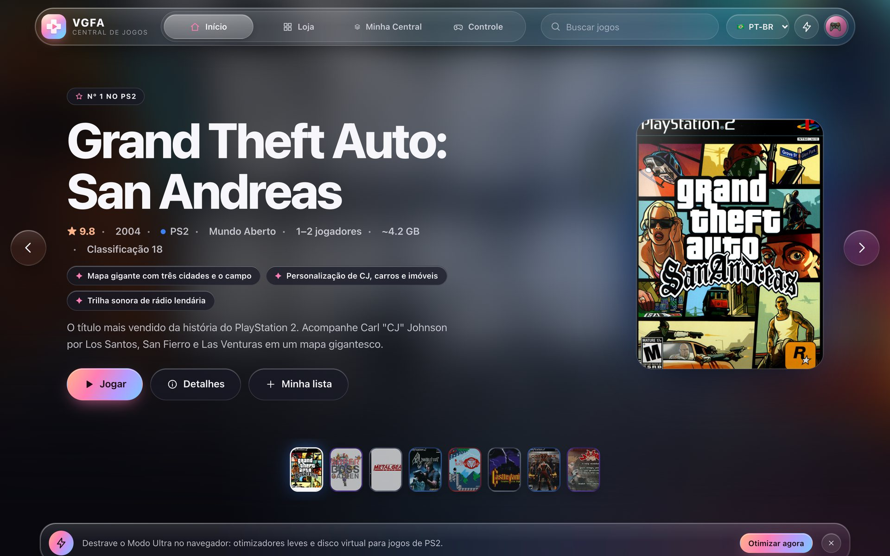
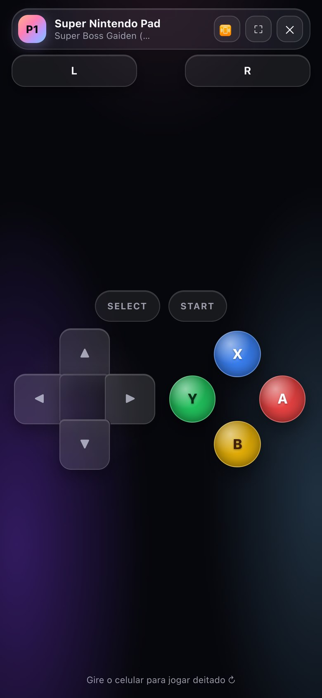

Visual Liquid Glass
Interface "Prisma": vidro translúcido, gradiente iridescente, tema escuro e claro, e modo leve automático em aparelhos fracos.
Do Atari ao PlayStation 2 no navegador. Seu celular vira o controle.


Números da v0.8 ainda em fechamento.
Tudo roda no aparelho de quem joga. Abra o link, escolha o jogo, pegue o celular e jogue.
Interface "Prisma": vidro translúcido, gradiente iridescente, tema escuro e claro, e modo leve automático em aparelhos fracos.
VGFA Link: pareamento por brokers MQTT públicos e conexão WebRTC direta. Se a rede bloquear, um relé de reserva mantém o controle funcionando.
8BitDo em qualquer modo, Xbox, DualSense, Switch Pro e genéricos. Mapeamento manual salvo e jogadores P1 a P4.
Seus jogos ficam guardados no aparelho, abrem de novo sem baixar e dá para apagar um por um ou liberar tudo com facilidade.
O progresso é salvo a cada 60 segundos e ao fechar. Voltou depois? O jogo continua de onde parou.
Transmita o jogo para um amigo: ele abre um link, vê a tela e joga sem baixar nada, até de um celular simples.
PlayStation 2 em WebAssembly com disco por streaming: o jogo começa sem esperar baixar a imagem inteira.
Navegação com as teclas do controle remoto da TV ou do Fire Stick: direcional, confirmar e voltar.
Perfis separados, cada um com seus saves e preferências. A família inteira na mesma central.
Toque em uma captura para ampliar.
O que mudou de uma versão para a outra, medido e comparado.
| Métrica | v0.6 | v0.7 | v0.8 |
|---|
Valores da v0.8 marcados como "em medição" ou aproximados (~) ainda serão fechados.
Nenhum servidor próprio: o site é estático, o pareamento usa brokers públicos e o jogo roda no aparelho.
Filtre por console e explore. Cada jogo comercial exige a sua própria cópia.
Todo o código do VGFA é próprio e aberto. Use, estude e contribua pelo GitHub.
Sem ROMs proprietárias no repositório; jogos comerciais exigem a sua própria cópia. Os emuladores são projetos abertos de terceiros, com seus respectivos créditos.